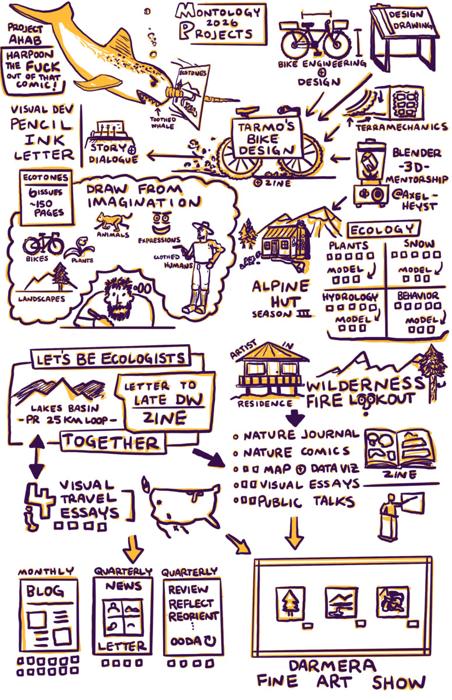

2026 Goals

Montology Projects 2026
Caryn and I always have a theme for each year. This year is “Project Ahab”. It is about making significant progress on our “White Whale” projects. Driving myself insane attempting to harpoon a large white toothed whale that ate my leg does not quite resonate with me. However, if I make a new story of a Narwhal (also a toothed whale!) named Ahab, he can use his elongated tooth/tusk to harpoon the fuck out of my Ecotones comic. That will not help me write, pencil, ink, letter, color, or with any of the dialogue, but it is a fun image.
Ecotones - Art, Engineering, Bikes, Ecology, Thinking, Problem Solving
Story Sentence modified for posting: Tarmo and Stick are exploring the area where I live in the future to (re)discover various species and understand how the ecosystems work after climate change.
I am very honest with myself about the marketability of a project like this. It is the comic I would want to read. My tastes are generally considered strange by most people’s standards. That is fine! A book like this does not exist, so I need to make it to satisfy my curiosity.
Where am I at? I have 50 pages thumbnailed for the first part of the story, the major plot points for the rest of the story, long character backgrounds to help with my current dialogue, some character designs, and some slightly different art styles for the backgrounds of the different major settings. I am using reference when necessary, but I want to rely as much on imagination drawing as possible because that is my main drawing skill I want to further develop. I need to get better at expressions and drawing clothed figures moving. Fabric in motion is an endless new fascination. I am taking an online class for this right now. Next month I am taking an advanced imagination drawing class.
One of the characters, Tarmo, is a mechanical engineer who designed his own adventure bike. The bike is similar to a fat bike. All of my mechanical engineering and design drawing study now have a very specific direction with a clearly defined project. I am having to branch out to other resources for off-road bikes. What I am noticing is that the resources for motorcycles and dirt bikes are much more advanced and nuanced because the riding conditions are much more variable. FUN!
The other character, Stick, is a theoretical ecologist. This is a little less of a stretch for me as I have done a lot of statistical and mathematical modeling to answer biological questions regarding plant metabolism and fire at a landscape scale. However, there are new models I am learning about for managing large stands of trees at different ages and species. A lot of these models also require an understanding of hydrology, so I downloaded a few books on that as well.
Tyler has agreed to mentor me in Blender. So far I have made a box and ramp (if you squint at it). The goal here is to make a 3D model of one of the characters’ tiny homes to use as a reference. I have also been playing around with already designed 3D bike models in Blender and FreeCAD. (Yes, I did consider 3D modeling a Narwhal; no, I won’t because that is not in spec this year).
Let’s Be Ecologists Together
2026 will be 10 years since my first wife Sharon Gray passed away . I told her when I met her that “Let’s Just Be Ecologists Together Somewhere”. All of this research into ecological topics is a way to honor her and that idea. Every year since she died, I write a letter to her. This year I will write and illustrate a zine with my newest letter. It will include some travel that we did together to scientific conferences as well as some add-on time exploring together. A lot of the visuals for the bulk of the zine will be from a wilderness area where we spent our 2nd anniversary right before she passed away. I scattered part of her ashes there and have been back to visit frequently. I want to be in physical shape enough to PR a 25 km trail run in that basin.
Artist In Residence
I applied and was chosen for an artist in residence at a wilderness fire lookout in Oregon by a well-funded non-profit. It will be 5 days solo hanging out, doing nature journaling, making comics, drawing maps, collecting and visualizing data, and writing about my experiences. A few months after, I will give a public talk in Oregon about the project. I am currently figuring out the feasibility and logistics of bikepacking to and from the lookout from my house. Theoretically it is possible, but I need to make sure I have enough time on either end to make the journey. If not, I will trail run around to explore further into the area than previous artists have.
Alpine Hut Caretaker Season III
Over the past 2 years I have been paid to caretake The Shasta Alpine Hut in August and September. This past season was even better than the first, so I plan to do this for a 3rd season in 2026. It pays for me to hike/run around, make observations, paint, think, read, engage with tourists if I want to, keep things tidy. I do not like telling tourists that animals should not be fed Subway sandwiches and other highly processed trash, but animals don’t have easy access to GLP-1 drugs! Ha! I have had some interesting debates with religious fundamentalists, learned about various self-driving cars from tech-bros working at competing SF companies, and confirmed that yes the white stuff up the mountain was indeed snow.
The main thing that I like about the job is that I get to decide if I want to engage with tourists. Providing information is an easy lift. Having a conversation is another thing that I can do if I think the person will be interesting. When I do decide to engage I try to point out some natural phenomena that is occurring right then and there that they were oblivious to. My heuristic for more deeper engagement is how they carry themselves and how attentive they are to their surroundings. I have gotten pretty good at observing this sub demographic of people that would hike up to an alpine hut. I met a 6-year-old girl who was scary smart and perceptive. Her mom appreciated that I attempted to answer all of her questions to the best of my ability and ask what she thought about things. She was smarter than most of the undergrads I have taught. I hope she finds her place in this world.
Season III is all about continued data collection. I know enough about how the ecosystem/watershed/hydrology models are constructed to collect some ballpark parameterization data without any sophisticated instruments. What were the methods used in the 1970s usually gets it in the ballpark.
Public Output
I will still be publishing a monthly blog post on my personal blog, but I am moving my newsletter and my illustrated updates here to approximately quarterly. I was working on the monthly illustration reviews for my journal to practice my cartoon style illustration sketchnotes, but have more or less saturated my learning. I am now on to more detailed information displays that are not really relevant for monthly posting, an autoethnography that will not be shared publicly (for now!), and my projects are requiring more and more uninterrupted time to go deeper.